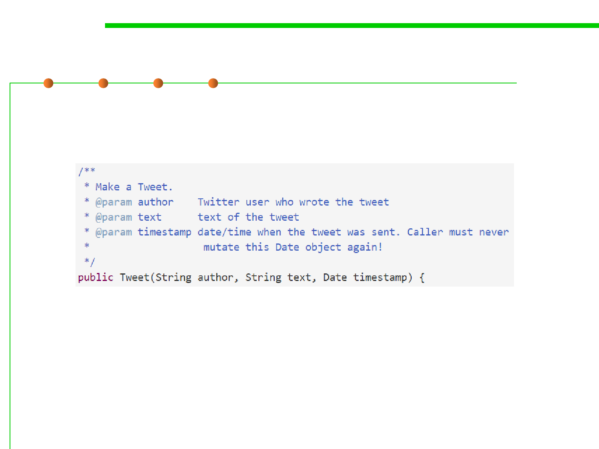

3.4 Object-Oriented Programming (OOP)
Leave the responsibility to your clients?
▪ You may object that this seems wasteful. Why make all these copies
of dates? Why can’t we just solve this problem by a carefully written
specification, like this?
▪ Yes, it works, but the cost in your ability to reason about the
program, and your ability to avoid bugs, is enormous.
▪ In the absence of compelling arguments to the contrary, it’s almost
always worth it for an abstract data type to guarantee its own
invariants, and preventing rep exposure is essential to that.